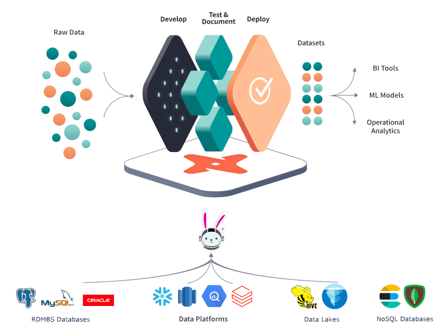

This is part two of the lakehouse ETL with dbt and Trino series. Start at the introduction if you haven’t already.
Now that you have set up all the required infrastructure, go through all the steps needed to install dbt and start building data pipelines.
Intro to dbt-trino
The dbt-trino adapter uses Trino as an underlying query engine to perform query federation across disperse data sources. Trino connects to multiple and diverse data sources (available connectors) via one dbt connection, and processes SQL queries. Transformations defined in dbt are passed to Trino, which handles these SQL transformation queries, and translates them to read data, create tables or views, and manipulate data in the connected data sources.

Installing dbt and bootstrapping your project
dbt can be installed through executing pip install dbt-trino. You need to have
Python 3.7+ installed.
After installing, you can run dbt --version to verify the dbt installation. It
should result in something like the following:
Core:
- installed: 1.3.0
- latest: 1.3.0 - Up to date!
Plugins:
- trino: 1.3.1 - Up to date!
Now, bootstrap the dbt project by executing dbt init. If you’ve just cloned or
downloaded an existing dbt project, like in the case of a blog, dbt init can
still help you set up your connection profile so that you can start working
quickly. It prompts you for connection information, and to add a profile (using
the profile name from the project) to your local profiles.yml, or create the
file if it doesn’t already exist. More about configuring profiles is available
from the official dbt
documentation.
Take, for example, the following configuration where you persist your flows into
the datalake catalog (or database) and analytics schema on the Trino server
running on port 8080 using the user admin. Note that in this development
setup you are not using any authentication mechanism, so method is set to
none. With the threads configuration, you define how many simultaneous
queries to run, in other words, how fast you want your project to refresh.
my_dbt_trino_project:
target: dev
outputs:
dev:
type: trino
method: none
user: admin
database: datalake
host: localhost
port: 8080
schema: analytics
threads: 1
All profiles.yml configuration options specific to dbt-trino can be found on
the dbt-trino GitHub
repository.
Your first model
The core construct of dbt is a model. A model is a SQL file within your project
in the models folder that contains a SELECT query. The results of this
select query materializes in your database as a VIEW or TABLE.
For example, you can select all customers from your webshop database by creating
a src_customers.sql file in your models.
SELECT * FROM webshop.public.customers
Now, when executing dbt run, dbt persists a table onto the
datalake.analytics schema called src_customers. Running dbt run again
replaces the existing view with a potential new definition if you change the
query.
Run this query in your favorite database client to validate the results of your model.
SELECT * FROM datalake.analytics.src_customers;
Adding your data sources
As you can see above, you are sourcing directly from the operational PostgreSQL database. However, directly referencing to a database table in your models is a bad practice. To fix that, you need to define a dbt source. Sources define all external objects your project needs to get things done.
Add a new sources.yml file in your models folder with the following
content:
version: 2
sources:
- name: webshop
database: webshop
schema: public
tables:
- name: customers
In the src_customers.sql, you can now refer to this source instead of the
hard-coded location created earlier. That saves us from having to change all
these locations everywhere when they change or you want to fetch them from a
test database instead of the production database. Adding the prefix src helps
to quickly identify which models are built straight from sources.
SELECT * FROM {{ source('webshop', 'customers') }}
Note the double curly braces {{ … }}, which indicate that
the code fragment in between is evaluated by dbt before sending the query to
your Trino instance. The
source macro, or
function, takes the database and schema from the first argument called
source_name, and the name of the object from the second argument called
table_name. The end result, which is the compiled query, is the same as the
query above without the source macro.
Adding EL to the T of dbt
Traditionally, dbt is used for database transformations only, hence the name data transformation tool. It leaves the extract and load to other tools, for example Airbyte or Fivetran. Now, with the data federation capabilities of Trino, EL (extract and load) is added to the T (Transform) capabilities of dbt. Any data can be added as if it was located within the same database, as long as there is a Trino connector for it. Think about having any relational or NoSQL databases, message queues, or API’s immediately available without having to perform an expensive and complicated extract and load process.
You have already loaded a table directly from our PostgreSQL database into the
datalake without any additional tools required. Now, add another source–the clickstream data. For example, what if you want to know how many times a
customer has visited our website before making a buy decision. Our clickstream
data is readily available under the website catalog.
First, you add a new source website to the sources.yml file:
version: 2
sources:
- name: webshop
...
- name: website
database: website
schema: clickstream
tables:
- name: clicks
Create a model file src_clicks.sql under the models folder:
with source as (
SELECT * FROM {{ source('website', 'clicks') }}
),
renamed as (
SELECT
visitorid,
useragent,
language,
event,
cast(from_iso8601_timestamp(eventtime) AS timestamp(6) with time zone) AS eventtime,
page,
referrer
FROM source
)
SELECT * FROM renamed
Execute dbt run again to materialize a newly created view.
dbt implicitly builds your DAG
A crucial concept in data pipelines is a DAG (Direct Acrylic Graph). A DAG defines all the steps the data pipeline has to perform from source to target. Each step of a DAG performs its job when all its parents have finished and triggers the start of its direct children (the dependents).
Most tools, like Apache Airflow, take a very explicit approach on constructing DAGs. dbt, however, constructs the DAG implicitly.
Every step of the DAG is a simple SQL file (called a model in dbt). You can
refer to other models using the
ref macro,
for example {{ ref(‘src_customers’)}}.
Let’s say, for example, you want to know how many times each customer visits the website before making a buying decision. For that, you need to join your webshop data with the clickstream data.
However, clickstream data tends to be big and not so easy to analyze. For example, the user might have researched products before actually registering or logging into the webshop. To solve this, you want to introduce the concept of sessionization, and try to associate these sessions with an actual user. Each visitor of the website gets a unique identifier that is stored in a long-lasting cookie. You also have a sessions table in the webshop where you can link this unique identifier to an actual user in your webshop. With this data, you can also identify the clicks performed prior to logging into the webshop. Below, you can see the lineage DAG of models generated by dbt.
First you need to add the sessions table to our sources:
version: 2
sources:
- name: webshop
database: webshop
schema: public
tables:
- name: customers
- name: sessions
Again, you add a simple model called src_sessions.sql that is just performing
a select on our source:
with source as (
SELECT * FROM {{ source('webshop', 'sessions') }}
),
renamed as (
SELECT
cookie_id,
cast(from_unixtime(started_ts/1000) AS timestamp(6)) AS session_started,
customer_id
FROM source
)
SELECT * FROM renamed
Now, build this by creating a new model sessionized_clicks.sql. First identify
some rules about our sessionization:
- A session is a sequence of clicks, in which no two consecutive clicks are more than one hour apart.
- Once a user logs in, you associate also past sessions with the user.
Trino supports numerous SQL functions and advanced operators that can be used in dbt models.
The query used in the following model uses some of Trino’s more sophisticated
features. Although complicated, they are necessary and useful in the
hands of a data engineer. One such feature, used to implement sessions, is
WINDOW operations. The
WINDOW clause allows you to look from the current record to the group of
records it belongs to. Some of the use cases are to detect the first or last
record, or the maximum or minimum (any aggregation) within that group. It is
different from a GROUP BY in the sense that it doesn’t group or reduce the
number of records.
The model is also making use of macro (more on that in a section below) called
star. It generates a comma-separated list of all fields that exist in the from
relation, excluding any fields listed in the except argument. The construction
is identical to SELECT * FROM {{ref(‘my_model’)}},
replacing star (*) with the star macro:
WITH sessions AS (
SELECT
date_diff('hour', lag(c.eventtime) OVER w, c.eventtime) > 1 AS new_session,
{{ dbt_utils.star(ref("src_clicks"), "c") }},
{{ dbt_utils.star(ref("customer_sessions"), "s", ["session_started", "session_ended"]) }},
first_value(c.referrer) ignore nulls OVER (PARTITION BY s.customer_id ORDER BY c.eventtime ASC ROWS BETWEEN UNBOUNDED PRECEDING AND CURRENT ROW) AS channel,
row_number() OVER w AS clickid,
min(eventtime) OVER w AS session_started,
max(eventtime) OVER w AS session_ended
FROM {{ ref("src_clicks") }} c
JOIN {{ ref("customer_sessions") }} s ON c.visitorid = s.cookie_id AND c.eventtime BETWEEN s.session_started AND s.session_ended
WINDOW w AS (
PARTITION BY c.visitorid ORDER BY c.eventtime
)
),
sequenced_sessions AS (
SELECT
{{ dbt_utils.star(ref("src_clicks")) }},
sum(if(new_session, 1, 0)) OVER w AS session_sequence,
clickid,
customer_id,
session_started,
session_ended,
channel
FROM sessions
WINDOW w AS (
PARTITION BY visitorid ORDER BY eventtime
)
)
SELECT
visitorid || '_' || cast(session_sequence as varchar) || '_' || cast(clickid as varchar) AS clickid,
visitorid || '_' || cast(session_sequence as varchar) AS sessionid,
customer_id,
session_started,
session_ended,
channel,
{{ dbt_utils.star(ref("src_clicks")) }}
FROM sequenced_sessions
Materializations (view, table, ephemeral)
To manage the performance of your data pipeline, you should wisely choose which models should be materialized as a view, which ones as a table, or just reused within an existing SQL statement.
As a general guideline, it is wise to make tables of all the data exposed to actual users, for example dashboards.
Here the sessionization is using a window and adding a session_id to each
click. You don’t want this expensive operation to be performed every time you
use the sessionized_clicks object. So it should be persisted as a table
instead of a view.
Just adapt the sessionized_clicks.sql model and add a config on top:
{{ config(materialized='table') }}
Now, when you execute dbt run, dbt persists this model as a table by wrapping
your query within a CREATE TABLE sessionized_clicks AS ... statement.
ephemeral models are not directly built into the database. Instead, dbt
interpolates the code from this model into dependent models as a common table
expression.
Is our sessionization logic correct
dbt makes it super easy to add data
tests. Let’s say you want to test if
your logic is correct. There are some generic tests like unique and not_null
defined in schema.yml. Tests check if values in a given column are unique or
not null.
The typical errors made when working on the sessionization logic are you messed something up and your sessions overlap. This should never be the case.
Add a dbt test to validate this. After modifying your model, you can easily run the test to see if your logic is correct.
Create assert_no_overlapping_sessions.sql in the tests folder.
SELECT
sc1.session_started,
sc1.session_ended,
sc1.session_ended,
sc2.session_started,
sc1.visitorid,
sc2.visitorid
FROM {{ ref('sessionized_clicks') }} sc1
JOIN {{ ref('sessionized_clicks') }} sc2
ON sc1.session_started > sc2.session_ended
AND sc1.session_ended < sc2.session_started
AND sc1.visitorid = sc2.visitorid
Now, you can run dbt test --select sessionized_clicks to test and validate the
model.
Using dbt macros
dbt comes with powerful feature called macros. The well-maintained package
dbt-utils contains macros that can be (re)used across dbt projects.
Starburst maintains dbt-trino-utils. This dbt package contains macros that:
- Can be (re)used across dbt projects running on Trino or Starburst databases.
- Define implementations of dispatched macros from other packages that can be used on Trino or Starburst databases.
To use dbt_utils or trino_utils, define both packages in the packages.yml
file:
packages:
- package: dbt-labs/dbt_utils
version: {SEE DBT HUB FOR NEWEST VERSION}
- package: starburstdata/trino_utils
version: {SEE DBT HUB FOR NEWEST VERSION}
Next, tell the supported package to also look for the trino_utils macros by
adding the relevant dispatches to your dbt_project.yml:
dispatch:
- macro_namespace: dbt_utils
search_order: ['trino_utils', 'dbt_utils']
Once packages are defined, run dbt deps which pulls the packages defined in
packages.yml
A sample use case might be dropping and cleaning databases from objects which are no longer used. To do so simply run:
dbt run-operation trino__drop_old_relations
To preview the cleaning results, add --args "{dry_run: true}" at the end of
the command above.
Adding static data with seeds
dbt also allows you to insert the content of CSV files (named
seeds in dbt) directly into a table
using the dbt seed command. This is particularly useful if you need to keep a
list of mappings or values with your project.
For example, you have a list comprised of campaigns, countries, and age groups.
Columns campaign_id identifies campaign, country where the campaign was run,
and the age_group a target group for the campaign.
You can simply create a csv campaigns.csv and put it into the seeds folder.
campaign_id,country,age_group
1,US,"18-24"
2,Europe,"18-24"
3,US,"25-40"
4,Europe,"25-40"
5,US,"41-60"
After performing the dbt seed command you can reference the seed in our
models using the familiar syntax:{{ ref(“campaigns”) }}.
Now, it’s time to make it even faster with incremental refreshing.